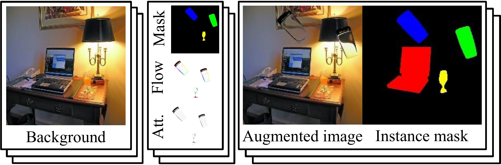
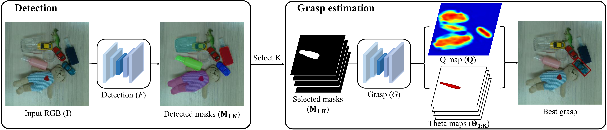
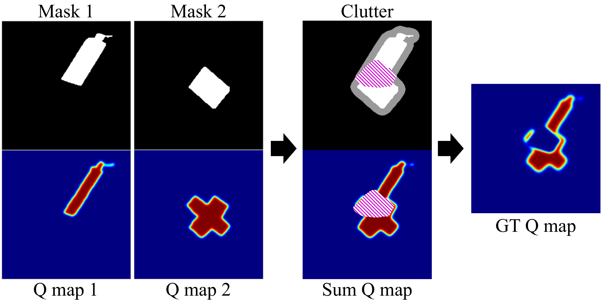
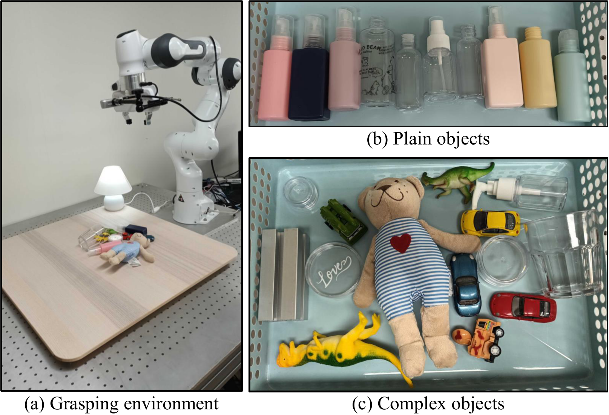
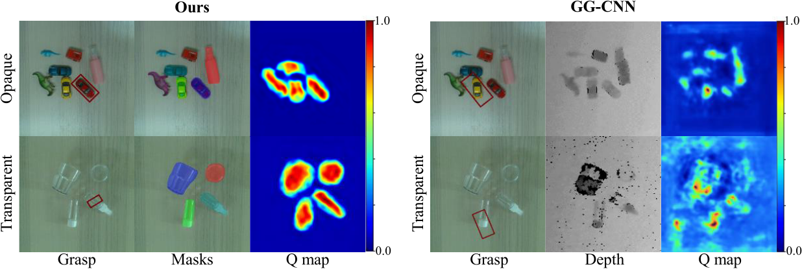
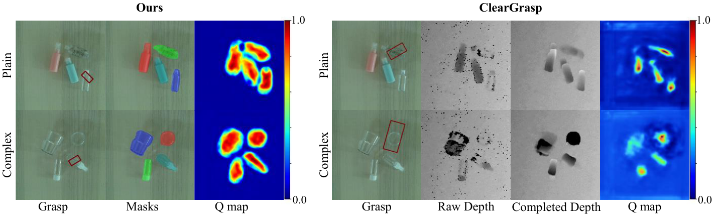
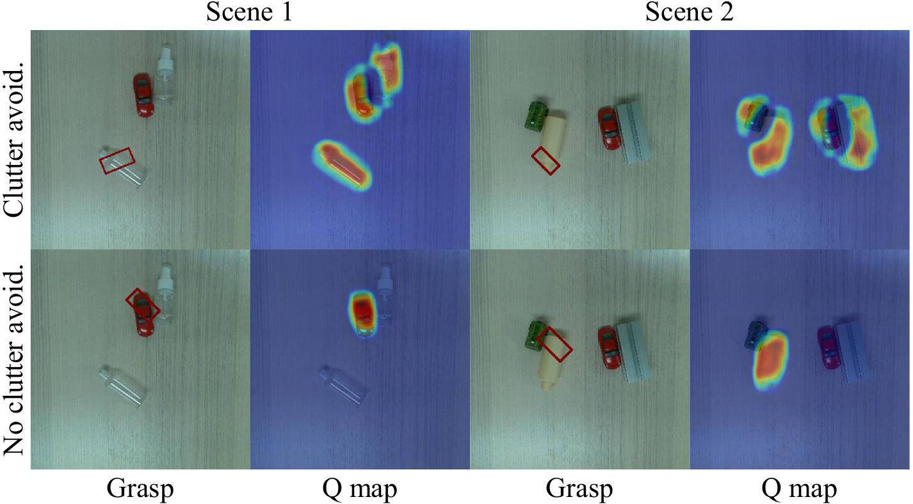
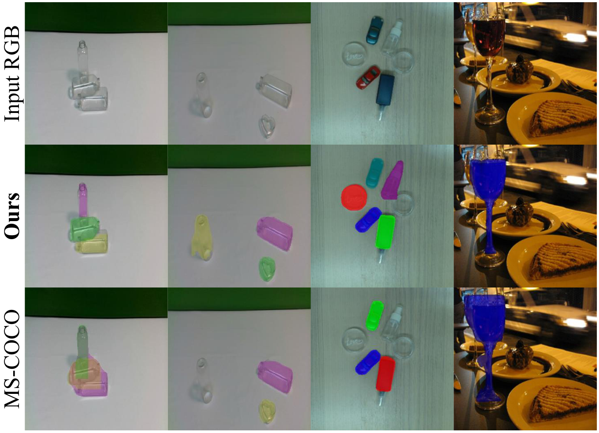
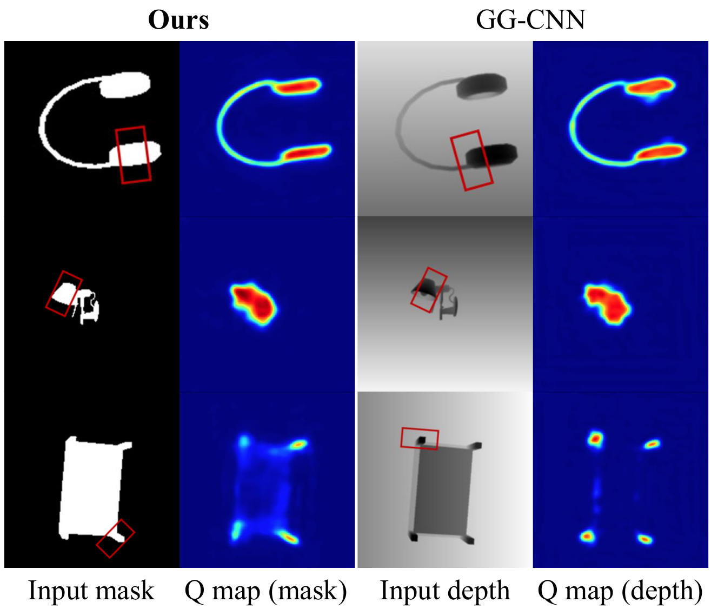

Overview video.
We introduce a mask-based grasping method that discerns multiple objects within a scene regardless of transparency or specularity and finds the optimal grasp position avoiding clutter. Conventional vision-based robotic grasping approaches often fail to extend to scenes containing transparent objects due to their different visual appearance. To handle the different visual characteristics, we first segment both transparent and opaque objects into instance masks — a domain-agnostic intermediate representation of both object types — using a neural network. While no labelled training dataset strongly represents both object types, we overcome this by augmenting transparent objects onto an existing large-scale dataset. Then, given the object instance masks, our method selects the top K discrete masks and robustly estimates grasp poses avoiding clutter. Through experiments, we verify that instance masks are lightweight yet provide sufficient information for vision-based grasping agnostic of appearance. On an unseen real-world test environment with complex objects, our method substantially outperforms previous methods without fine-tuning.
Material changes the signal. It shouldn't change the grasp.
ClearGrasp completes noisy depth for transparent objects before grasping; GG-CNN regresses grasps straight from depth. Both inherit whatever the sensor gets wrong.
Appearance-coupled.
Transparent surfaces don't reflect depth-sensor rays, and their RGB appearance shifts wildly with background and lighting. A pipeline trained on one material regime degrades on the other.
Material-agnostic.
A mask only encodes "this region is one object" — it looks the same whether that object is a steel bottle or a wine glass. Train the grasp estimator on masks and it transfers across materials for free.
Detect instance masks, then grasp from masks alone.
Two CNNs: a detector trained on a transparent-augmented MS-COCO, and a grasp estimator adapted from GG-CNN to take stacked instance masks instead of depth.
Synthesize transparent objects into MS-COCO
No dataset represents opaque and transparent objects with equal weight, so we build one: sample a 3D transparent object from TOM-Net, decompose it into a mask, attenuation map, and refractive-flow map, then composite it onto an MS-COCO image via the image-matting equation — repeated 0–3 times per image to simulate occlusion.
Detect instance masks for every object
A Mask R-CNN detector F, trained on 114,000 augmented images, maps an input RGB image to instance masks M₁:N for both transparent and opaque objects — no material-specific branch required.
Grasp estimation with clutter-avoidance training
The top K=4 masks stack into a K-channel input (replacing GG-CNN's 1-channel depth). Training pairs are composed from the Jacquard dataset so that ground-truth quality is suppressed wherever another object's vicinity overlaps — teaching the network G to avoid clutter, not just find any graspable point.
Read the grasp straight off the maps
The grasp point is the arg-max of quality map Q; its mask index gives the angle from the matching theta map Θi. Width comes for free — intersect the grasp line with that instance's mask boundary and measure the span, no extra network needed.



Only method to clear 50% success on every configuration.
Tested with a Franka Panda + RealSense 435i on 24 unseen real objects, none seen during training of any method. 13 trials per configuration.

| Configuration | MasKGrasp (Ours) | ClearGrasp | GG-CNN |
|---|---|---|---|
| Plain T. | 53.8% | 53.8% | 38.4% |
| Plain O. | 53.8% | 53.8% | 76.7% |
| Complex T. | 61.5% | 46.1% | 15.3% |
| Complex O. | 69.2% | 69.2% | 53.8% |
GG-CNN wins on Plain O. (its exact training regime) but collapses on transparent objects from noisy depth. ClearGrasp ties us on plain scenes but falls behind on Complex T. MasKGrasp is the only method above 50% everywhere — and depth completion costs ClearGrasp ~1.19s per grasp versus ~0.001s for ours.


| Configuration | Clutter | No clutter |
|---|---|---|
| With clutter avoidance | 69.2% | 92.3% |
| Without clutter avoidance | 25.3% | 84.6% |
Both variants do fine when objects are isolated; only the clutter-aware model holds up once objects are touching.

| Eval set | Method | AP₀₀ | AP₀₂₂ | IoU |
|---|---|---|---|---|
| MS-COCO(T) | Baseline | 51.1 | 28.3 | 0.523 |
| MS-COCO(T) | Ours | 57.4 | 36.7 | 0.544 |
| MS-COCO(O) | Baseline | 27.2 | 14.2 | 0.358 |
| MS-COCO(O) | Ours | 27.7 | 14.8 | 0.337 |
The augmentation lifts transparent-object AP substantially while keeping opaque-object accuracy on par.


What MasKGrasp adds.
A mask-based grasping approach that handles opaque and transparent objects with the same network, showing instance masks carry enough geometric context even in multi-object scenes.
A grasp estimator that explicitly considers free space between instance masks, predicting the highest-probability grasp while avoiding cluttered regions.
A large-scale instance segmentation dataset covering both object types, built by augmenting MS-COCO with synthetic transparent objects — no new manual annotation required.
A Mask R-CNN trained on that dataset generalizes robustly to real transparent and opaque objects alike, without sacrificing accuracy on ordinary objects.
Honest edges.
MasKGrasp generalizes to unseen transparent and opaque objects in the real world without fine-tuning — within the bounds of a 2D grasp representation.
Fixed grasping height. MasKGrasp is a 2D planar-grasp algorithm and struggles with objects that need a grasp height it doesn't assume.
No full 6-DoF pose. Aggregating instance masks across multiple views could recover 3D structure — even for transparent and specular scenes that defeat depth sensors — and extend to full 6-DoF grasping and more complex manipulation.
BibTeX
@inproceedings{lee2022maskgrasp,
author={Lee, Junho and Hur, Junhwa and Hwang, Inwoo and Kim, Young Min},
booktitle={2022 IEEE/RSJ International Conference on Intelligent Robots and Systems (IROS)},
title={{MasKGrasp}: Mask-based Grasping for Scenes with Multiple General Real-world Objects},
year={2022},
pages={3137-3144},
doi={10.1109/IROS47612.2022.9982130}
}